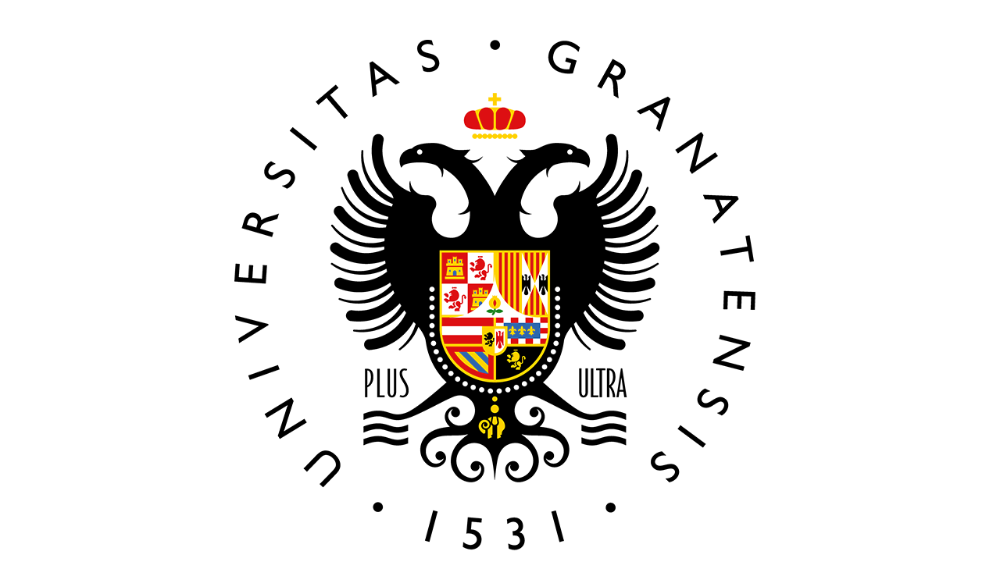
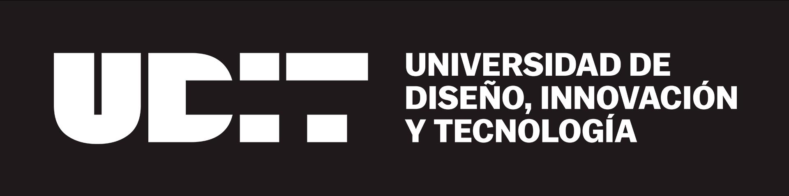
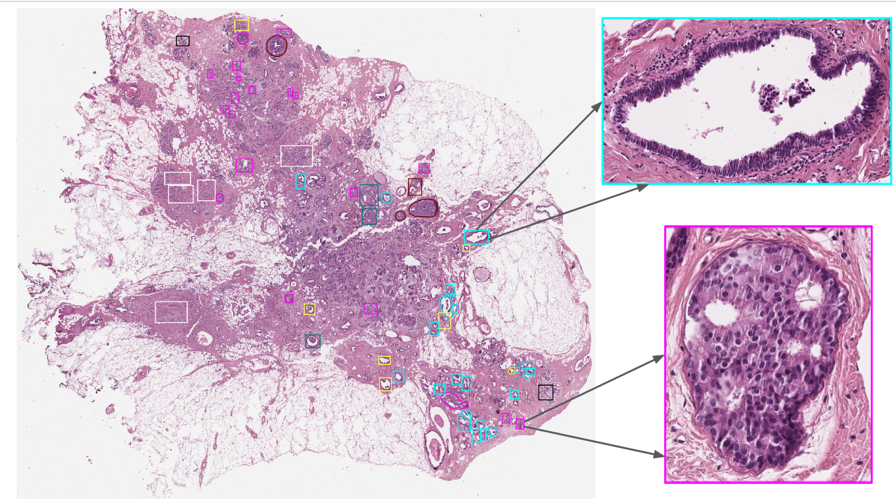
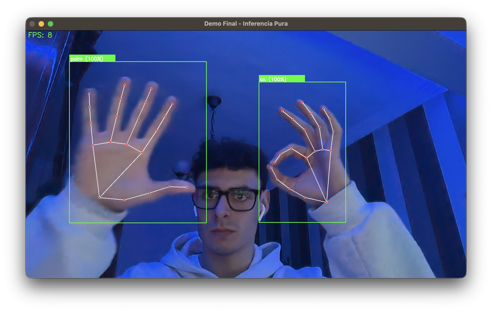

Investigar.
Construir.
Entender.
Hola, soy Juan Carlos. Me interesa crear soluciones de inteligencia artificial y software que respondan a problemas reales, desde la patología digital hasta la interacción en tiempo real.

Curiosidad con
sentido práctico.
Me gusta comprender el problema antes de elegir la tecnología.
Soy graduado en Ingeniería Informática por la Universidad de Granada y curso el Máster Universitario en Inteligencia Artificial en UDIT. Me interesan especialmente el machine learning, la visión por computador y la construcción de sistemas que puedan aportar valor fuera del entorno académico.
Mi TFG, reconocido con Matrícula de Honor, me permitió trabajar de extremo a extremo en un problema de patología digital. En NTT DATA conocí, además, cómo se desarrollan y mantienen soluciones en un entorno profesional colaborativo.

TFG con Matrícula de Honor

Actualmente en curso
Experiencia y especialidades.
Una base técnica que sigo ampliando a través de nuevos proyectos y aprendizaje continuo.
01 / Datos e inteligencia artificial
Python · pandas · NumPy · scikit-learn · PyTorch · TensorFlow · evaluación de modelos · MLflow
02 / Visión y desarrollo
OpenCV · MediaPipe · CNN · Vision Transformers · SQL · Git · Linux · Java
03 / Experiencia profesional
NTT DATA · Granada · 2026. Prácticas en Salesforce CRM: desarrollo con Apex, consultas SOQL, automatizaciones y trabajo en equipo.
Proyectos destacados.
Tres proyectos, tres problemas distintos y una misma forma de trabajar: curiosidad, criterio técnico y atención al detalle.
Clasificación de imágenes histológicas de mama
Un estudio de clasificación histopatológica de mama con BRACS, desde el preprocesamiento hasta la evaluación de modelos.

Investigación / TFGReconocimiento de gestos en tiempo real
Reconocimiento de gestos con una cámara convencional: un proyecto en equipo que compara alternativas y prioriza la fluidez en CPU.

Visión por computadorSistema de gestión de hermandad
Una aplicación de escritorio para ayudar a una hermandad a organizar sus hermanos, cuotas, informes y estadísticas.
 Aplicación de escritorio
Aplicación de escritorioHablemos del próximo reto.
Si quieres conocer mejor alguno de mis proyectos o crees que podemos trabajar juntos, estaré encantado de conversar.